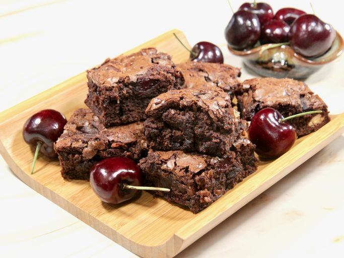

Cherry Brownie
Home

Description
These easy cherry brownies are perfect for those times when you get a craving for chocolaty, fudge-y brownies,
and you want them quick and easy. There are some fabulous brownie mixes out there, and when you add fresh
cherries and nuts, you’re in for a special treat.
Ingredients
- 1/3 cup vegetable oil
- 1/4 cup water
- 1 large egg
- 1 teaspoon almond extract (optional)
- 1 package brownie mix
- 1 cup fresh dark sweet cherries, pitted and quartered
- 1/3 cup chopped and toasted pecans
Steps
- Preheat the oven to 165 degrees C. Line an 8x8-inch pan with parchment paper, leaving an overhang on two
sides for easy removal, and spray with cooking spray.
- Combine oil, water, egg, and vanilla extract in a large bowl. Stir in brownie mix until well combined.
Gently fold in cherries and pecan nuts. Spread out batter evenly in the prepared pan.
- Bake in the preheated oven until a toothpick inserted into the center comes out clean, and the edges start
to pull away from the sides of the pan, 44 to 48 minutes.
- Cool completely in the pan. Lift out of the pan using the parchment paper, cut, and serve.